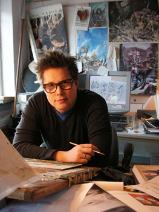

Jesper Ejsing nacio en Dinamarca en 1973.
Descubrio la fantasia gracias a los libros de Tolkien y juegos como Dungeons & Dragons.
Estudio literatura Danesa e Historia del Arte por un tiempo hasta que abandono
la universidad para empezar a hacer arte freelance.
Actualmente vive con sus dos hijos y su mujer, Lea.